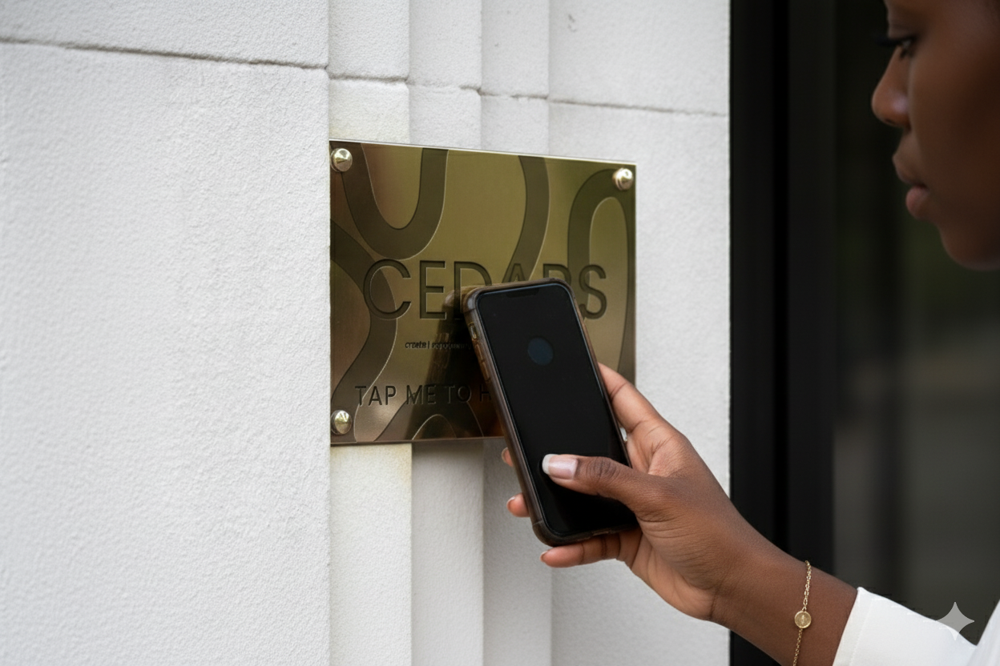

Every story in our archive represents a living memory, a piece of South Dallas heritage preserved for future generations. From childhood memories at Fair Park to the music that filled the Longhorn Ballroom, these stories paint a picture of community, resilience, and joy that has defined South Dallas for decades.
Browse our collection of audio stories, watch video testimonials, and discover the voices that make South Dallas unique.

Our NFC-enabled plaques are installed at historic locations throughout South Dallas. Simply tap your phone against the plaque to instantly hear stories from that exact location.
It's that easy: Walk up, tap your phone, and listen to history come alive right where it happened.
Find plaque locations on our Discover page.
Listen to memories, experiences, and histories shared by South Dallas community members.
Mrs. Dorothy Johnson shares her cherished memories of visiting Fair Park as a child in the 1960s. From the State Fair of Texas to community gatherings, Fair Park has been the heart of South Dallas celebrations for generations.
Ms. Ruth Anderson recalls the Forest Theater as a cornerstone of Black cinema in Dallas. For decades, this theater showed films and hosted community events that brought South Dallas together through stories of Saturday matinees and first dates.
Mr. James Williams tells the story of the legendary Longhorn Ballroom, which hosted everyone from Bob Wills to Ray Charles. This venue was where South Dallas came to dance, celebrate, and make history through the power of music.
Watch video testimonials and stories captured from South Dallas community members.
Community Voices
Historical Moments
Your memories matter. Add your voice to the CEDARS archive and help preserve South Dallas heritage for future generations.
Contribute Your Story